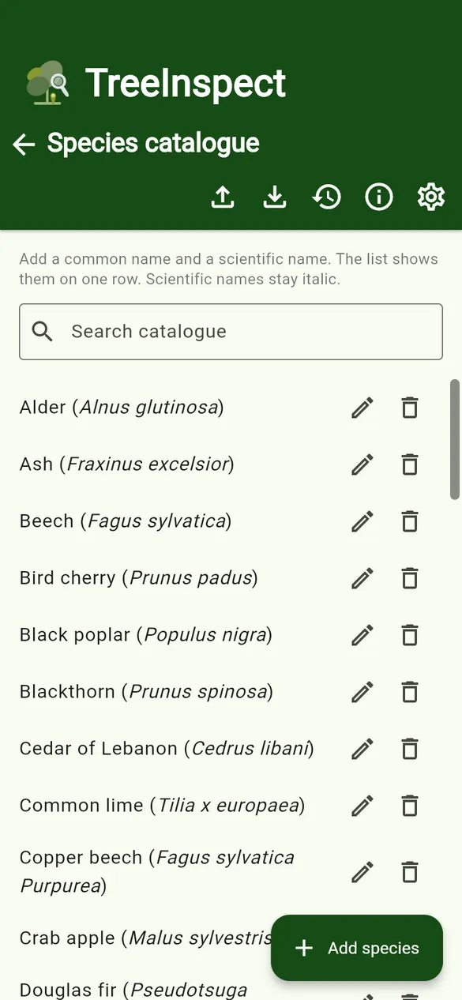
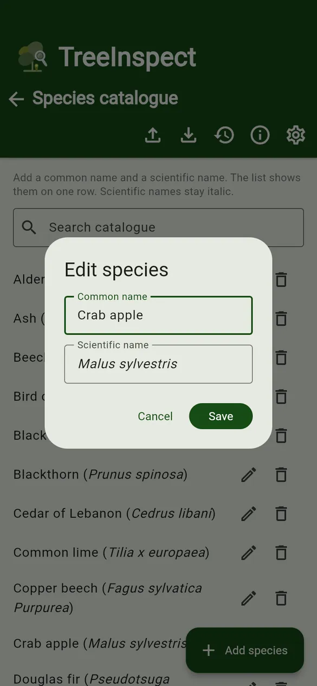
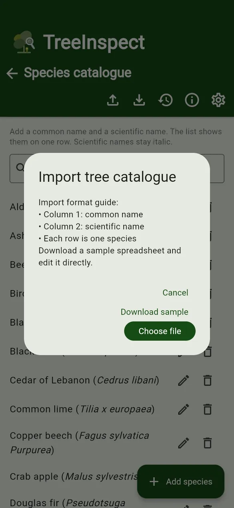

User guides › Species catalogue
Species catalogue
The shared list of common and scientific names: add, edit, import, export and reset.
The species catalogue is one list shared by all projects. Tree forms suggest names from it. Open it from the Projects screen with the Species catalogue icon (the tree).



- + Add species – enter a common name and a scientific name. Scientific names are shown in italics automatically.
- Edit (pencil) and Remove (bin) on each row.
- Search catalogue to find a name quickly.
- New species typed on a tree form are added to the catalogue when the tree is saved.
- Import from Excel – column 1 is the common name and column 2 the scientific name, one species per row. A header row is skipped and names already in the list are not added twice. If the file has several sheets, choose one. Download the sample.
- Export to Excel – save the current catalogue.
- Reset to built-in list – go back to the built-in list of common UK species.